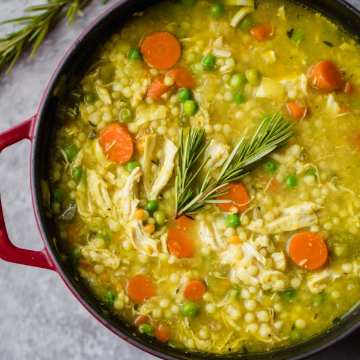
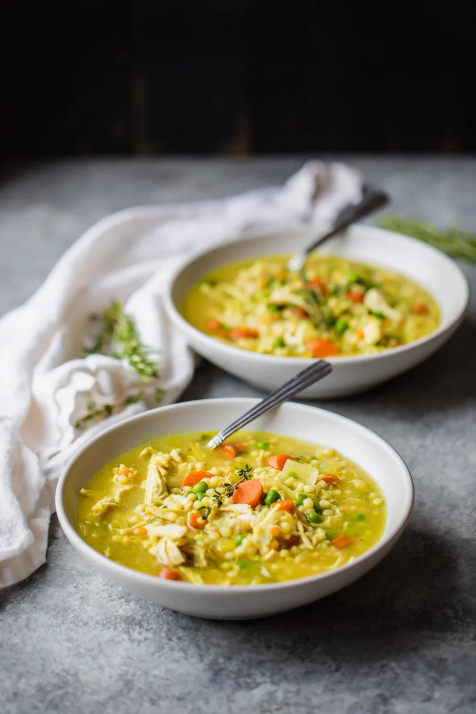

The Best Chicken Soup You’ll Ever Eat


The BEST chicken soup you’ll ever eat is the perfect recipe to make when you’re feeling sick. Packed with anti-inflammatory ingredients like ginger, turmeric, garlic. This is the BEST CHICKEN SOUP RECIPE EVER!
Ingredients
- 1 tablespoon avocado oil or olive oil
- 6 cloves of garlic, minced
- 1 yellow onion, diced
- 2 large carrots, thinly sliced
- 2 celery stalks, roughly chopped
- 1 tablespoon fresh grated ginger
- 1 tablespoon fresh grated turmeric (or 1 teaspoon ground turmeric)
- 6 cups low sodium chicken broth
- 1 pound boneless skinless chicken breast or thighs
- 1 teaspoon freshly chopped rosemary
- 1 teaspoon freshly chopped thyme, stems removed
- ½ teaspoon salt
- Freshly ground black pepper
- 1 cup pearl or Israeli couscous
- 2/3 cup frozen peas (optional, but recommended)
Instructions
Step 1
- Place a large dutch oven or pot over medium high heat and add in oil.
- Once oil is hot, add in garlic, onion, carrots and celery; cook for a few minutes until onion becomes translucent.
Step 2
- Next add in grated ginger and grated turmeric.
- Saute for 30 seconds to let the spices cook a bit, then add in chicken broth, chicken breast, rosemary, thyme, salt and pepper.
Step 3
- Bring soup to a boil, then stir in couscous. You’ll want the chicken to be covered by the broth so make sure you stir them down to the bottom
Step 4
- Bring soup to a boil, then stir in couscous. You’ll want the chicken to be covered by the broth so make sure you stir them down to the bottom
Step 5
- Once chicken is cooked, remove with a slotted spoon and transfer to a cutting board to shred with two forks. Add chicken back to pot then stir in frozen peas. If you find that you don't have enough broth, feel free to add in another cup. Everyone likes their soup differently. Taste and adjust seasonings, if necessary.
- Enjoy